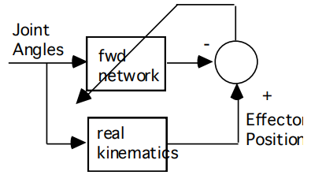
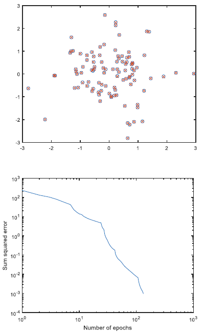
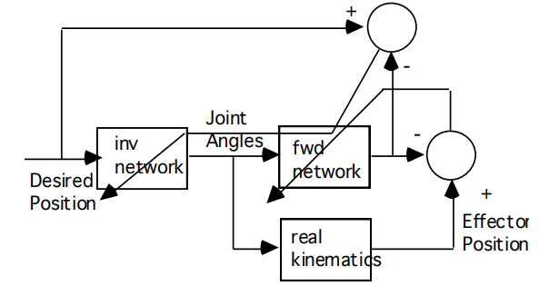
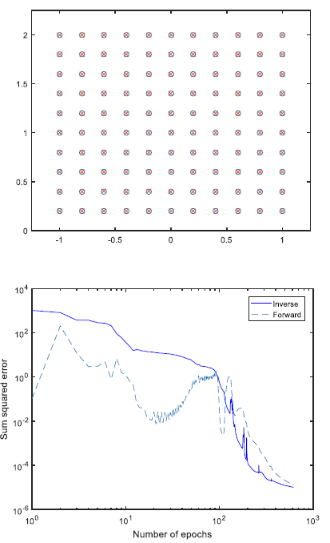
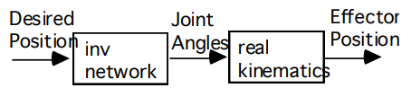

Undergraduate Coursework · Rose-Hulman
Undergraduate Coursework · Rose-Hulman
Inverse kinematics with a distal teacher.
Solving the inverse kinematics of a 3-DOF planar manipulator with supervised learning, using the distal teacher method and Levenberg-Marquardt optimization. The trick is that the network is never told what the correct joint angles are.
The problem
The project replicates the results of Jordan and Rumelhart's paper Forward Models: Supervised Learning with a Distal Teacher, applied to a 3-DOF planar serial manipulator.
The problem it solves is a real one in robotics. Forward kinematics is easy: give the arm three joint angles and trigonometry tells you exactly where the end effector lands. Inverse kinematics is the hard direction, because a 3-DOF arm reaching a 2D point is redundant, so any given target position has infinitely many joint configurations that reach it. You cannot simply train a network on input-output pairs, because averaging over several valid answers can produce an answer that is not valid at all. The distal teacher method sidesteps this by never supervising the joint angles directly. It supervises only the end-effector position, which is where the error is actually observable, and lets the network settle on whichever joint solution it likes.
Step one: learning the forward model
First I trained a network to mimic the forward kinematics of the arm, generating 100 sets of random joint-space configurations and their resulting effector positions. The network learns the arm's geometry by comparing its own prediction against the real kinematics and backpropagating the difference.


Step two: the inverse network and the distal teacher
With a working forward model, I added an inverse network in front of it and trained the two simultaneously using the distal teacher method with Levenberg-Marquardt training. The inverse network takes a desired position and outputs joint angles; those angles pass through the forward model to predict where the arm would actually end up. The error between desired and achieved position is then propagated back through the frozen forward model to correct the inverse network. The forward model is what makes this possible: it acts as the differentiable path from an effector-space error back to a joint-space correction.

I tested the trained system on 121 points across the joint space. The desired positions and the positions the arm actually reached sit on top of each other, and both networks converge to a very low sum-squared error.

The result
What comes out the other end is the useful part. The forward model can be dropped, and the inverse network alone becomes a controller: tell it where you want the end of the arm to be, and it hands back joint angles that put it there.

The whole system was developed in MATLAB from scratch, without using any pre-existing neural-network libraries.